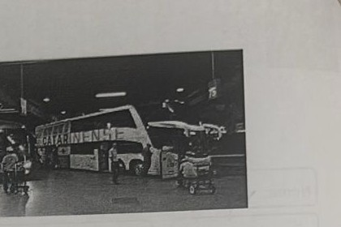

Professor: Ruben
Ônibus de duas empresas A e B, partem de um mesmo terminal rodoviário, mas com frequências diferentes: o da empresa A parte a cada 12 minutos, e o da empresa B, a cada 18 minutos. Sabendo que dois ônibus, um de cada empresa, acabaram de sair juntos, em quanto tempo dois outros ônibus dessas empresas irão partir juntos novamente?

Determine o valor de
√((−3)²) + (−1)⁶ − (−1,2)⁰ + ∛(4⁶)
Classifique as afirmações a seguir em V para verdadeira ou F para falsa:
a) √(a² + b²) = a + b
b) √81 = ±9
c) A soma de dois números racionais é sempre um número racional.
d) Se a e b são números reais, e a − b > 0, então a⁴ − b⁴ > 0.
Determine o valor de
(2⁹ × 128 × 16³) / 256
Considere os seguintes números naturais
x = 3 × 5² × 2y
z = 720
w = 2400
A) Determine o MDC entre z e w.
B) Se o máximo divisor comum entre x, z e w é 24, determine o valor de y.
A) Simplifique a expressão a seguir deixando a resposta como uma fração irredutível.
√(2³⁷ / (2³⁵ + 2³⁸ + 2³⁹))
B) "O planeta Vênus é o segundo do nosso sistema solar a partir do Sol e o mais próximo da Terra, a apenas 61 milhões de quilômetros de distância. Uma de suas principais características é o fato de, como um planeta rochoso, sua superfície ser composta por vales e altas montanhas, cheias de vulcões. Vênus ainda apresenta um período de rotação maior que o período de translação, ou seja, o dia em Vênus que dura 243 dias terrestres é maior que seu ano, que dura cerca de 225 dias terrestres."
https://www.ufmg.br/espacodoconhecimento/planeta-venus-e-as-semelhancas-com-a-terra
Considerando que a velocidade média de um ônibus espacial é de aproximadamente 28.000 km/h, calcule em quantas horas um ônibus espacial levaria para percorrer a distância entre a Terra e Vênus.